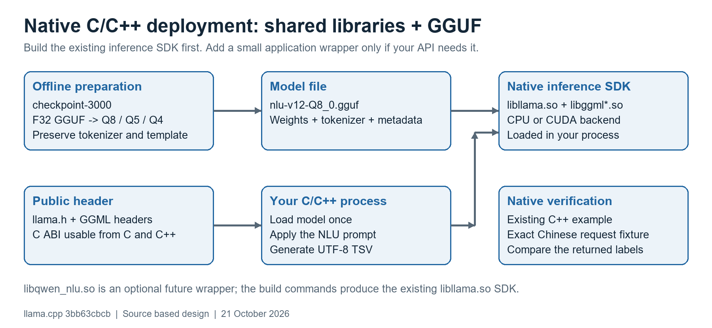

An explicit Linux shared-library runbook for checkpoint-3000
21 October 2026 | Target: your Xeon Gold 5222 workstation, optional NVIDIA GPU | Source revision: 3bb63cbcb. Follow the numbered steps in order. Build commands run on Linux, not in the Windows workspace used to prepare this document.
Outcome: a local SDK containing libllama.so, its GGML dependencies and public headers; your converted model remains a separate GGUF file. A native C++ executable loads those libraries and replays your exact NLU prompt. This guide uses the existing llama.cpp API directly.
Figure 1. Model preparation is offline. Production inference runs inside your C/C++ process. The Python helper supplied with this document only launches the native test and compares output.

| Step / page | Result |
|---|---|
| 1 / 2 | Pinned source checkout, prerequisites and known paths. |
| 2 / 3 | F32 reference and Q8_0 / Q5_K_M / Q4_K_M GGUF candidates. |
| 3 / 4 | Installed CPU shared-library SDK with dependency checks. |
| 4 / 5 | C++ consumer built against the SDK; exact NLU replay. |
| 5 / 6 | Application integration sequence and request-state rules. |
| 6 / 7 | Relocatable deployment folder and optional wrapper contract. |
| 7 / 8 | CUDA alternative and fair performance measurements. |
| 8 / 9 | Acceptance checklist, troubleshooting and source references. |
A custom libqwen_nlu.so is a possible convenience layer, not an existing output of llama.cpp. Its proposed contract is on page 7. You can complete the native shared-library validation without that wrapper. No compiled Linux binaries or model weights are included in this document bundle.
Use a fresh directory for the pinned checkout so the commands do not change an existing development tree. The revision below was verified to exist upstream. Keep the same source revision for the SDK, examples and your application headers.
sudo apt-get update sudo apt-get install -y build-essential cmake git python3 \ python3-venv libssl-dev unzip binutils git clone https://github.com/ggml-org/llama.cpp.git "$HOME/llama-qwen3-native" cd "$HOME/llama-qwen3-native" git checkout --detach 3bb63cbcbfb62056c84fe9e521b0f3d756d29c32 git rev-parse HEAD export QWEN_SRC="$HOME/llama-qwen3-native" export QWEN_MODELS="$HOME/qwen3-nlu-models" export QWEN_SDK="$HOME/qwen3-nlu-sdk-cpu" export QWEN_KIT="$HOME/qwen3-native-kit" mkdir -p "$QWEN_MODELS"
Expected: git rev-parse HEAD prints the full revision above. If cloning reports that the directory already exists, use a new directory or verify that existing checkout; do not delete it to make this step succeed.
Place qwen3-native-kit.zip in your Linux home directory, then extract it. The archive contains the qwen3-native-kit directory. Run this once for a fresh kit directory; a repeated unzip may ask whether to replace files.
unzip "$HOME/qwen3-native-kit.zip" -d "$HOME" ls "$QWEN_KIT" ls "$QWEN_KIT/fixtures"
The kit includes this PDF, a browser-readable guide, the architecture PNG/SVG, exact request/expected-result fixtures, and run_native_check.py. Python is used for model conversion and the test launcher; the production inference library and C++ example do not embed Python.
| Host | Work |
|---|---|
| VM-0-59-ubuntu | The checkpoint path you supplied is here. It can perform conversion and quantization. |
| lah-Precision-7820-Tower | Build the native CPU SDK here; link your application and measure inference here. |
If these are separate machines, repeat the source/prerequisite setup where needed. Transfer GGUF files and fixtures to the Xeon, not a CPU-native executable compiled on the VM. On each new terminal, repeat the export lines so subsequent commands use the intended paths.
Assumptions: Ubuntu/Debian Linux x86-64, C++17 compiler and a Python version supported by this checkout. Python 3.11 or 3.12 is a practical converter environment. RAM, GPU model and exact Ubuntu release are still unspecified.
Run this step on the host where the checkpoint is accessible. Keep model.safetensors and every tokenizer file together, including chat_template.jinja. Your config declares float32, so use an F32 reference instead of the earlier generic BF16 recipe.
cd "$QWEN_SRC" cmake -S . -B build-tools -DCMAKE_BUILD_TYPE=Release \ -DGGML_CUDA=OFF -DLLAMA_BUILD_TESTS=OFF \ -DLLAMA_BUILD_SERVER=OFF -DLLAMA_BUILD_APP=OFF cmake --build build-tools -j 4 --target llama-quantize llama-bench python3 -m venv .venv-convert source .venv-convert/bin/activate python -m pip install --upgrade pip python -m pip install -r requirements/requirements-convert_hf_to_gguf.txt QWEN_TRAIN_ROOT=/data/nlu/jqli/llm_train_platform/output QWEN_CHECKPOINT="$QWEN_TRAIN_ROOT/nlu_v12_modi_qwen3_06b_full/checkpoint-3000" python convert_hf_to_gguf.py "$QWEN_CHECKPOINT" \ --outfile "$QWEN_MODELS/nlu-v12-F32.gguf" --outtype f32 ./build-tools/bin/llama-quantize "$QWEN_MODELS/nlu-v12-F32.gguf" \ "$QWEN_MODELS/nlu-v12-Q8_0.gguf" Q8_0 ./build-tools/bin/llama-quantize "$QWEN_MODELS/nlu-v12-F32.gguf" \ "$QWEN_MODELS/nlu-v12-Q5_K_M.gguf" Q5_K_M ./build-tools/bin/llama-quantize "$QWEN_MODELS/nlu-v12-F32.gguf" \ "$QWEN_MODELS/nlu-v12-Q4_K_M.gguf" Q4_K_M sha256sum "$QWEN_MODELS"/*.gguf
Expected: four GGUF files, successful conversion/quantization exits, and model metadata identifying Qwen3. Inspect conversion logs for actual tensor dtypes and the chat template. The config declaration and 2.3 GB source file are not a substitute for inspecting tensor metadata.
Copy the generated GGUF files to $HOME/qwen3-nlu-models on the Xeon using your normal file-transfer method. Compare SHA-256 values on both hosts. Keep F32 for correctness validation; Q8_0 is the initial low-memory serving candidate. Generate every lower-precision candidate from the same F32 file.
The source checkpoint contains training state such as optimizer.pt and scheduler.pt. These are not deployed with the runtime. Keep them where you may resume training. The runtime GGUF includes its tokenizer metadata; retain the original checkpoint/template separately for reproducibility.
Checkpoint compatibility is configuration-level evidence only until this command succeeds. If conversion reports missing tensors, tokenizer files or unsupported pre-tokenization, resolve that error before proceeding. Do not substitute the public Qwen model for your fine-tuned weights.
Run on the Xeon from the pinned checkout. A separate build directory keeps this library configuration independent of conversion tools and any CUDA build. GGML_BACKEND_DL=OFF makes the enabled backends normal linked dependencies.
cd "$QWEN_SRC" cmake -S . -B build-so-cpu \ -DCMAKE_BUILD_TYPE=Release \ -DBUILD_SHARED_LIBS=ON -DCMAKE_INSTALL_LIBDIR=lib \ -DGGML_NATIVE=ON -DGGML_CUDA=OFF -DGGML_BACKEND_DL=OFF \ -DLLAMA_BUILD_COMMON=OFF -DLLAMA_BUILD_TESTS=OFF \ -DLLAMA_BUILD_EXAMPLES=OFF -DLLAMA_BUILD_TOOLS=OFF \ -DLLAMA_BUILD_SERVER=OFF -DLLAMA_BUILD_APP=OFF cmake --build build-so-cpu -j 4 --target llama cmake --install build-so-cpu --prefix "$QWEN_SDK" ls -lh "$QWEN_SDK/lib/"*.so* ls "$QWEN_SDK/include/llama.h" file "$QWEN_SDK/lib/"libllama.so* env LD_LIBRARY_PATH="$QWEN_SDK/lib" ldd "$QWEN_SDK/lib/libllama.so"
Expected: ELF x86-64 shared objects and symlinks for libllama.so, libggml.so, libggml-base.so and libggml-cpu.so, plus headers and CMake package files. Version suffixes are normal. ldd should report no missing dependencies.
qwen3-nlu-sdk-cpu/ include/llama.h include/ggml*.h lib/libllama.so -> versioned shared object lib/libggml.so -> versioned shared object lib/libggml-base.so -> versioned shared object lib/libggml-cpu.so -> versioned shared object lib/cmake/llama/ lib/cmake/ggml/
libllama.so provides the public C ABI for loading the model, managing its context, tokenizing input and generating output. GGML libraries provide tensor execution and the CPU backend. The model is a separate file loaded at runtime; it is not compiled into the .so.
The build uses native CPU instructions available on this Xeon. Use it on compatible hardware, or make and test a separate portable build. Keep all libraries and headers from the same revision. Do not mix libllama.so from one build with GGML libraries from another.
LD_LIBRARY_PATH above applies only to that dependency check. Later test commands also set the library path explicitly. System libraries such as libc, libstdc++ and possibly libgomp remain OS/runtime dependencies and must be compatible with the deployment system.
Use the existing external-package example to prove your application can consume the installed SDK. It links against the shared libraries and performs inference in a native executable. It does not start a server.
cmake -S "$QWEN_SRC/examples/simple-cmake-pkg" \ -B "$QWEN_SRC/build-native-check" \ -DCMAKE_BUILD_TYPE=Release -DCMAKE_PREFIX_PATH="$QWEN_SDK" cmake --build "$QWEN_SRC/build-native-check" -j 4 env LD_LIBRARY_PATH="$QWEN_SDK/lib" \ ldd "$QWEN_SRC/build-native-check/llama-simple-cmake-pkg" python3 "$QWEN_KIT/run_native_check.py" \ --exe "$QWEN_SRC/build-native-check/llama-simple-cmake-pkg" \ --model "$QWEN_MODELS/nlu-v12-F32.gguf" \ --library-dir "$QWEN_SDK/lib" --out "$HOME/nlu-check-f32" python3 "$QWEN_KIT/run_native_check.py" \ --exe "$QWEN_SRC/build-native-check/llama-simple-cmake-pkg" \ --model "$QWEN_MODELS/nlu-v12-Q8_0.gguf" \ --library-dir "$QWEN_SDK/lib" --out "$HOME/nlu-check-q8"
Acceptance target: EXACT_MATCH=True for the supplied case. F32 is checked first so a template/tokenization/conversion issue is not misdiagnosed as quantization loss. A mismatch is evidence to investigate, not proof that the model is unusable.
The helper reads rendered-prompt.txt as UTF-8 and passes it as one argument, preserving tabs and trailing newlines. It invokes the C++ example with -n 128 and -ngl 0. The example uses a greedy sampler, matching the token-selection intent of your top_k=1 request.
The example prints the prompt before the answer. The helper checks that prefix exactly, removes it and one final newline added by the example, then compares generated bytes with expected.txt. It saves native.stdout.bin, native.stderr.log and answer.txt under the selected output directory. The helper does not load the model in Python.
Expected content shape for this case: intelligent_car_control<TAB>skylight_control<TAB>slot assignments Helper exit codes: 0 = exact match 1 = generated answer differs 2 = setup, native execution or output-prefix failure
Your fixture includes the original Chinese text and expected Chinese slot values. The service response you supplied reported 97 prompt and 21 output tokens; those counts and predictions still require independent verification in this runtime.
This example is a one-shot correctness check: it reloads the model for each process and uses its own context/thread defaults. Its process wall time is not steady-state application latency. Do not use it as the final latency benchmark.
Use include/llama.h from the installed SDK. Its public interface is callable from C or C++; a C++ implementation is convenient for buffers and resource ownership. The existing examples/simple/simple.cpp is the reference for this exact revision, including the batch_ext and llama_process API.
# Inside your application CMakeLists.txt, after creating your target: find_package(Llama REQUIRED) target_link_libraries(your_app PRIVATE llama ggml::all) target_compile_features(your_app PRIVATE cxx_std_17) # Configure your application with: # -DCMAKE_PREFIX_PATH=/absolute/path/to/qwen3-nlu-sdk-cpu
Replace your_app with your existing CMake target. No source change to llama.cpp is needed for this integration. Rebuild the application whenever you change the SDK revision or ABI.
| When | API / required behavior |
|---|---|
| Process initialization | Call llama_backend_init(). Obtain llama_model_default_params(); set n_gpu_layers=0 for CPU. |
| Load once | llama_model_load_from_file() loads the selected GGUF. Obtain its vocabulary using llama_model_get_vocab(). |
| Create worker state | Use llama_context_default_params(); set n_ctx=4096, n_threads=4, n_threads_batch=4, n_batch=512 and n_ubatch=128. Create a context with llama_init_from_model(). |
| Create sampler | Use a greedy sampler (the simple example uses a sampler chain containing llama_sampler_init_greedy()). |
| Start independent request | Reset request KV/sequence metadata, positions and sampler state. For a private context, llama_memory_clear(llama_get_memory(ctx), false) resets memory metadata; llama_sampler_reset() resets sampler state. |
| Prepare input | Build the exact system/user/assistant prefix; call llama_tokenize() with special-token parsing enabled. Size buffers from its returned token count. |
| Process prompt | Use the batch_ext API and llama_process(ctx, LLAMA_PROCESS_TYPE_DECODE, batch). Chunk large prompts to fit n_batch; use explicit consecutive token positions. |
| Generate answer | Sample; stop on llama_vocab_is_eog(). Convert ordinary output with llama_token_to_piece(), append bytes and decode the next token. Enforce at most 128 generated tokens. |
| Shutdown | Release batches and samplers, then contexts and model. Call llama_backend_free() only after all engine users are finished. |
Use one context per concurrent worker, or serialize calls on one context. Do not mutate a context from two requests concurrently. Check every return code and output-buffer length; report an error rather than returning a truncated NLU label. Keep weights loaded across requests.
The metadata-only reset above prevents prior requests from participating in inference; it does not zero the underlying buffers. If your process has an explicit memory-erasure requirement, choose the corresponding data-clearing policy and measure its cost.
For the fixed two-message request you supplied, build this byte sequence. SYSTEM is the unchanged Chinese system instruction from fixtures/system-prompt.txt. USER is the full history/query string; the history stays inside that one message.
<|im_start|>system\nSYSTEM<|im_end|>\n <|im_start|>user\nUSER<|im_end|>\n <|im_start|>assistant\n<think>\n\n</think>\n\n
The displayed \n sequences mean LF bytes; do not insert extra line breaks between the three fragments. fixtures/rendered-prompt.txt contains the exact combined bytes for your example. Keep the empty thinking block in the prompt. Do not add JSON output constraints to this tab-separated task.
llama_chat_apply_template() in the core library supports a predefined template set, not arbitrary Jinja execution. For this fixed request shape, the verified construction above is sufficient. If the application later accepts arbitrary chat histories or tools, use the project's common Jinja implementation and test those cases separately.
export QWEN_PACKAGE="$HOME/qwen3-native-package" mkdir -p "$QWEN_PACKAGE/lib" "$QWEN_PACKAGE/include" \ "$QWEN_PACKAGE/bin" "$QWEN_PACKAGE/models" cp -a "$QWEN_SDK/lib/." "$QWEN_PACKAGE/lib/" cp -a "$QWEN_SDK/include/." "$QWEN_PACKAGE/include/" cp "$QWEN_SRC/build-native-check/llama-simple-cmake-pkg" \ "$QWEN_PACKAGE/bin/qwen_nlu_demo" cp "$QWEN_MODELS/nlu-v12-Q8_0.gguf" "$QWEN_PACKAGE/models/" cp "$QWEN_KIT/SOURCE_REVISION.txt" "$QWEN_PACKAGE/" python3 "$QWEN_KIT/run_native_check.py" \ --exe "$QWEN_PACKAGE/bin/qwen_nlu_demo" \ --model "$QWEN_PACKAGE/models/nlu-v12-Q8_0.gguf" \ --library-dir "$QWEN_PACKAGE/lib" --out "$HOME/nlu-check-packaged"
cp -a preserves library symlinks. The helper sets LD_LIBRARY_PATH for the child process. Give your production launcher the same library-directory configuration, or configure and validate an equivalent ELF runpath. Keep the compatible system runtime dependencies available on the target.
A small wrapper can expose create / predict / destroy through extern "C" with an opaque handle. Creation accepts model path and CPU/GPU/context settings. Prediction accepts UTF-8 user text and a caller-owned output buffer, returning a status plus the required byte count. Destruction releases resources. Keep C++ exceptions inside the wrapper and define concurrent-call behavior.
That wrapper is a design option, not generated by these commands. The installed libllama.so already supplies the native inference API. The package example contains a native demo executable; replace it with your application after integration.
CPU validation can proceed independently. Your earlier NVIDIA driver was 525.105.17 and the GPU had 24 GiB VRAM, but its name was truncated. Check the actual GPU and installed toolkit before making a CUDA build.
nvidia-smi --query-gpu=name,driver_version,memory.total --format=csv nvcc --version
The CUDA label in nvidia-smi is a driver compatibility indicator. NVIDIA lists CUDA 12.x minor compatibility on the 525 family with feature/PTX limits; CUDA 13.x requires the 580 family or newer under that table. Use a compatible GPU/toolkit/driver combination for this revision. If the toolkit is missing or incompatible, complete the CPU path first.
export QWEN_SDK_CUDA="$HOME/qwen3-nlu-sdk-cuda" cd "$QWEN_SRC" cmake -S . -B build-so-cuda \ -DCMAKE_BUILD_TYPE=Release \ -DBUILD_SHARED_LIBS=ON -DCMAKE_INSTALL_LIBDIR=lib \ -DGGML_NATIVE=ON -DGGML_CUDA=ON -DGGML_BACKEND_DL=OFF \ -DLLAMA_BUILD_COMMON=OFF -DLLAMA_BUILD_TESTS=OFF \ -DLLAMA_BUILD_EXAMPLES=OFF -DLLAMA_BUILD_TOOLS=OFF \ -DLLAMA_BUILD_SERVER=OFF -DLLAMA_BUILD_APP=OFF cmake --build build-so-cuda -j 4 --target llama cmake --install build-so-cuda --prefix "$QWEN_SDK_CUDA" cmake -S "$QWEN_SRC/examples/simple-cmake-pkg" \ -B "$QWEN_SRC/build-native-check-cuda" \ -DCMAKE_BUILD_TYPE=Release -DCMAKE_PREFIX_PATH="$QWEN_SDK_CUDA" cmake --build "$QWEN_SRC/build-native-check-cuda" -j 4 python3 "$QWEN_KIT/run_native_check.py" \ --exe "$QWEN_SRC/build-native-check-cuda/llama-simple-cmake-pkg" \ --model "$QWEN_MODELS/nlu-v12-Q8_0.gguf" --gpu-layers 99 \ --library-dir "$QWEN_SDK_CUDA/lib" --out "$HOME/nlu-check-cuda"
Expected: successful CUDA detection, no missing dependencies, startup logs showing full model-layer offload, and the same task-quality acceptance checks. Keep the CUDA SDK in a separate directory; it adds GPU runtime dependencies and is not an automatic CPU-only fallback package.
Measure load time separately from repeated predict calls. For CPU, compare 2/4/8 generation threads and tune prompt threads separately. For CPU/GPU, hold GGUF, prompt bytes, context, greedy sampling and cache policy fixed. Record p50/p95 whole-request latency, correctness, peak RAM/VRAM and concurrency.
Start with Q8_0. Adopt Q5_K_M or Q4_K_M only if they pass the same held-out NLU set and give a useful measured benefit. Test a 2048-token context only if the longest formatted prompt plus output budget fits; F16 KV payload then falls from about 448 MiB to 224 MiB, before other allocations.
| Check | Pass condition |
|---|---|
| Source / binary consistency | Headers, libllama, GGML libraries and application are built from the recorded revision. |
| Native loading | ELF x86-64 libraries resolve on the target. No ldd entry says not found. |
| Conversion baseline | F32 GGUF passes the known case; investigate differences in checkpoint identity, prompt bytes or tokenizer before tuning precision. |
| Quantization quality | Q8/Q5/Q4 pass agreed domain, intent and slot-value accuracy limits on held-out cases, including history-dependent and multi-intent queries. |
| Output contract | Actual UTF-8 tabs and labels are preserved. No accidental prompt echo, thinking trace or truncated answer reaches the application. |
| Runtime state | Model stays loaded; independent requests do not inherit unintended KV state; concurrency uses isolated contexts or serialization. |
| Performance | Warm p50/p95 predict latency and peak memory meet product limits at the required concurrency. Cold-start latency is reported separately. |
Missing shared library: verify the selected SDK directory, symlinks and loader path. Illegal instruction: check where the native binary was compiled and rebuild for the actual CPU. Undefined symbol: remove mixed-version library paths and rebuild the consumer against the pinned SDK. F32 output differs: inspect native.stderr.log, prompt bytes and checkpoint identity. Wrong prefix: inspect native.stdout.bin; check special tokens and unexpected BOS insertion. CUDA failure: verify the GPU, nvcc toolkit and driver together.
Build targets, install paths, API names and example behavior were checked against the local source. The upstream revision exists. The supplied template was rendered with thinking disabled, and the request bytes/tabs were preserved. The helper comparison logic and document layout were checked. The checkpoint weights and target Linux host were unavailable, so no actual Linux SDK build, model conversion or inference result is claimed.
Shared-library and install configuration: CMakeLists.txt
Native generation example: examples/simple/simple.cpp
External CMake consumer example: examples/simple-cmake-pkg/CMakeLists.txt
Backend dependencies and shared libraries: ggml/src/CMakeLists.txt